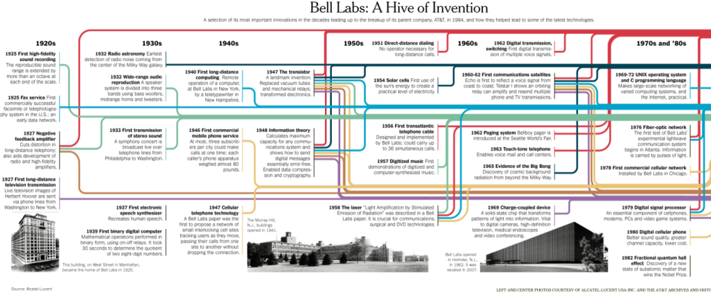

Copyright © Sai Charan L All content on this blog is shared under the Creative Commons license CC BY-NC-ND
If you ever wanted to be part of an organization which can offer insane freedom and a huge financial support to build whatever you want, I bet you don’t have any other dream than joining such organization. Well, one such organizations (I highly doubt if a second one ever existed… maybe PARC, R&D of Xerox) was Bell Laboratories (Bell Labs), the R&D division of AT&T, once upon a time, the only and largest telephone service company in the US.
Many of the important research breakthroughs happened in this laboratory. Masters and PhD scholars from renowned universities in the US who went to be part of Bell Labs, were definitely part of some important inventions in the world. Many major inventions like Unix, C , C++ programming languages, Information theory, Lasers, SCCS (the first version control system – ancestor of Git, maybe) etc.. and of course the heart of every device in this world (and outer space), the transistor, all came from this same place. Here is an image which shows the timeline of Bell labs with its inventions.


Copyright © Sai Charan L All content on this blog is shared under the Creative Commons license CC BY-NC-ND